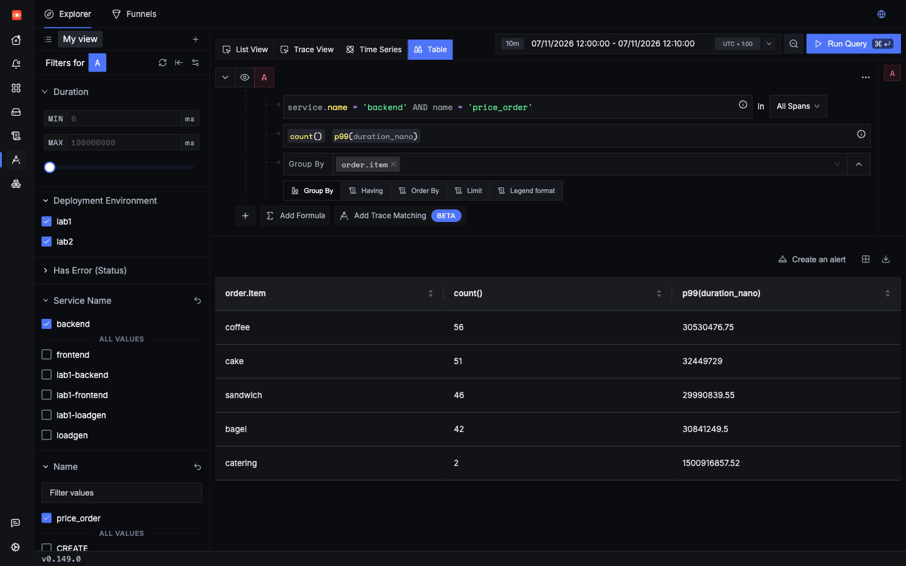
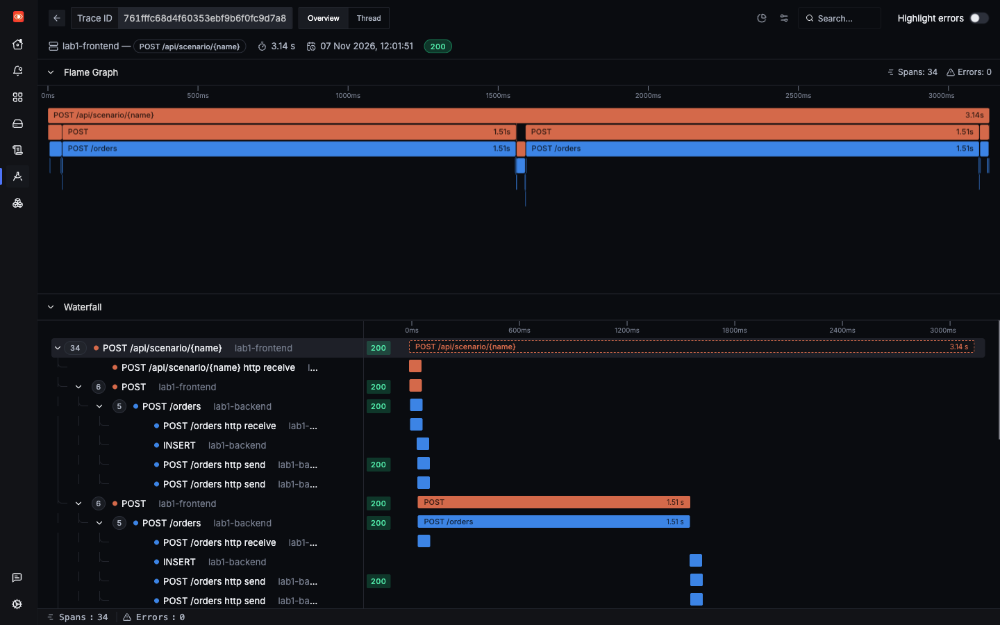
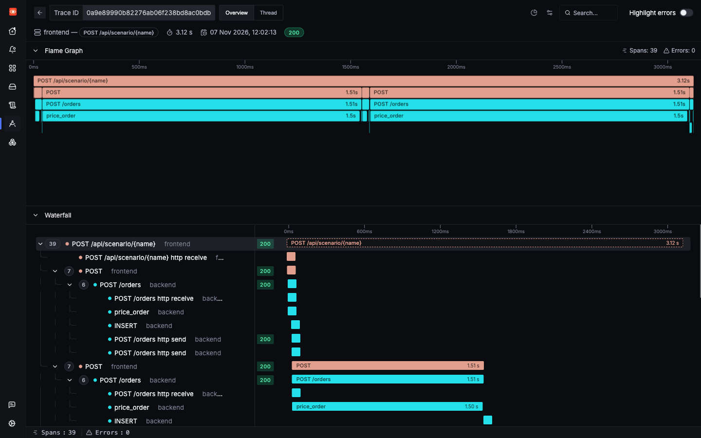

Lab 2: incident 1 of 4
Only one product is slow
Some orders take over a second, and nothing fails. Lab 1 can tell you which orders were slow, and its logs can even name the product. What it can't do is connect the two. That connection is one dimension on one span.
1Trigger it
The slow_item scenario places five orders, and two of them are for catering. Both labs have the same bug, so fire it in each one.
2Symptom
The call succeeds, but slowly. In saved runs it returned HTTP 200 after 3,142 ms in Lab 1, and 3,131 ms in Lab 2. No span has an error, and each order looks the same from the outside.
3Where to look
In both labs, start with the slow spans. Then ask three questions: which product, where did the time go, and does it happen every time?
4Search
Lab 1
The slow requests are easy to find:
But the span can't tell you more. Nothing puts the product on a span, so this finds nothing:
The logs do have it, because the app writes order.item in its order stored line. That is plain logging, as covered in the instrumentation code:
You can count these and sum them, but a log has no duration. So you can see how many catering orders there were, and not how slow they were. Each log shares a span_id with its slow span, so you can check one at a time.
Lab 2
The price_order span carries the product, so one search answers it:

catering is about 1.5 s, and the others about 30 ms.5Evidence
Lab 1

POST /orders spans take 1.51 s, and the flame graph has nothing under them but a thin INSERT.Two POST /orders spans take about 1.5 seconds, and their only child is an INSERT of a few milliseconds. The rest of the time is unexplained. The logs below the trace show that those two orders were for catering, but you have to match them up by hand.
Lab 2

price_order fills each one.Now the time has a home. price_order takes about 1,500 ms for catering, and under 30 ms for everything else.
| Question | Lab 1 | Lab 2 |
|---|---|---|
| Which requests are slow? | Yes, from spans | Yes, from spans |
| Which product was it? | Yes, from the log on each slow span, one at a time | Yes, on the span |
| Where did the time go? | No, only a gap before the INSERT | Yes, price_order |
| Latency by product, in one search? | No | Yes |
The Lab 1 answer does exist, but only outside SigNoz's search box. Joining logs to spans on span_id in ClickHouse gives the same picture:
6Root cause
labs/lab2-custom-dimensions/app/backend.py lines 87–10087def price_order(order: OrderIn) -> float:
88 # Manual span: shows up as a child of the request span, with attributes.
89 with tracer.start_as_current_span("price_order") as span:
90 span.set_attribute("order.item", order.item)
91 span.set_attribute("order.qty", order.qty)
92 # Deliberate bug: pricing is very slow for this one item.
93 time.sleep(1.5 if order.item == "catering" else random.uniform(0.005, 0.03))
94 total = round(PRICES.get(order.item, 5.0) * order.qty, 2)
95 # Deliberate bug: this 10% coupon makes the whole order free.
96 if order.coupon == "SAVE10":
97 span.set_attribute("order.coupon", order.coupon)
98 total = 0.0
99 span.set_attribute("order.total", total)
100 return totalPricing sleeps for 1.5 seconds when the item is catering. It is deliberate here. In a real app it might be a call to a supplier, or a slow calculation for one product type.
The bug is in both labs. The code around it is the only difference: Lab 2 wraps the same logic in a span, and sets two attributes.
7Resolution
In this lab the sleep is deliberate, so removing it is the fix.
- time.sleep(1.5 if order.item == "catering" else random.uniform(0.005, 0.03))+ time.sleep(random.uniform(0.005, 0.03))Try the fix
- Change it. Make that edit in
labs/lab2-custom-dimensions/app/backend.py, and save it. - Deploy it, from the repo's root. Saving the file isn't enough, because the pods run the image from the last build. What this command does.
make lab2 - Fire the same request in Lab 2. It should now take well under a second, not about 4 seconds.
- Re-run the latency-by-product search, Pricing latency by product, with a time range that starts after you deployed.
cateringshould drop to the same level as the others. In our run its P99 went from 1,507 ms to 23 ms. - Undo the fix when you're done. The bugs in this lab are there on purpose. With the fix deployed, this page's button can no longer show the incident, for you or anyone else using this copy of the lab.
git restore labs/lab2-custom-dimensions/app/backend.py make lab2
Check yourself: Lab 1 has order.item on its logs. Why can it still not give you P99 latency by product?
Check yourself: What does the price_order span add that no log line could?